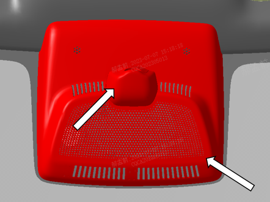
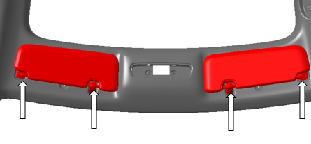
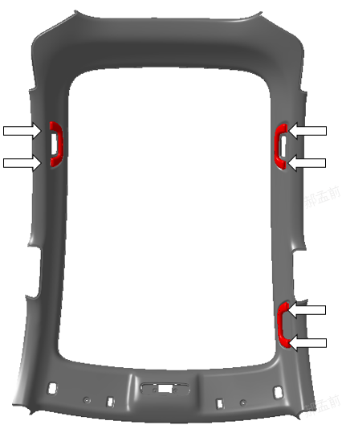
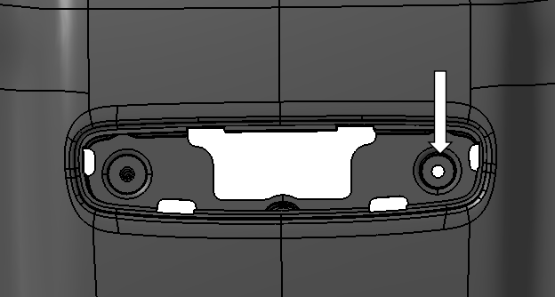
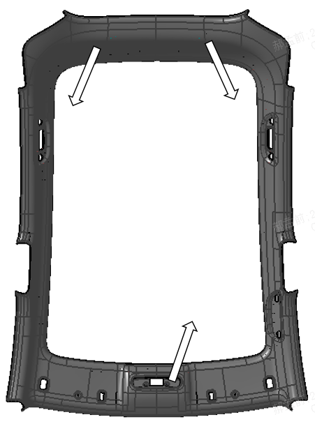
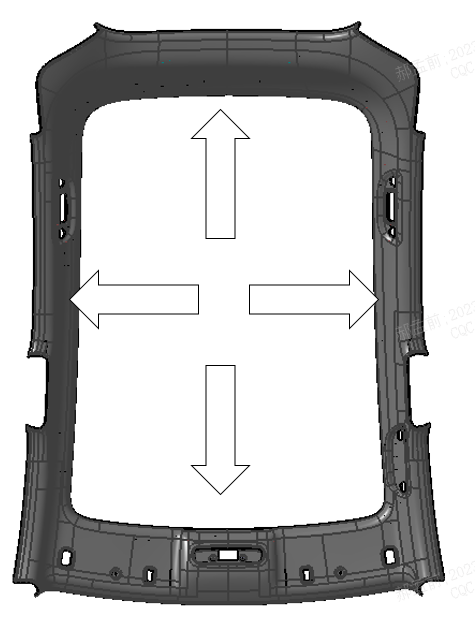

Демонтировать узел верхней облицовочной панели стойки A. См. Снятие и установка узла верхней облицовочной панели стойки A
Демонтировать облицовочную панель стойки B. См. Снятие и установка облицовочной панели стойки B
Демонтировать облицовочную панель стойки C. См. Снятие и установка облицовочной панели стойки C
С помощью пластиковой лопатки поддеть и снять декоративную крышку ветрового стекла

Демонтировать передний плафон освещения салона, см. Передний плафон освещения салона
Демонтировать солнцезащитный козырек, см. Снятие и установка солнцезащитного козырька

Демонтировать безопасные ручки: с помощью крестовой отвертки выкрутить винты и снять 3 безопасные ручки

Отсоединить электрический разъем жгута проводов потолка, точное расположение см. на электрической схеме жгута проводов потолка.
С помощью крестовой отвертки выкрутить болты в зоне переднего плафона освещения салона

Потянуть руками внутрь салона для освобождения передних и задних пластмассовых фиксирующих пистонов

Руками потянуть вниз периметр люка в крыше, чтобы грибовидные фиксаторы вышли из зацепления, после чего снять обивку потолка

Установка выполняется в порядке, обратном снятию.